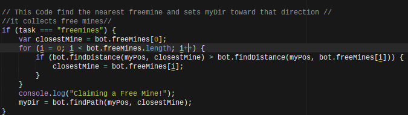

var Bot = require('bot');
// var PF = require('pathfinding');
var bot = new Bot('ldwy6glh', 'training', 'http://vindinium.org'); //Put your bot's code here and change training to Arena when you want to fight others.
//var bot = new Bot('fwo8jk0c', 'arena', 'http://52.53.211.7:9000'); //Put your bot's code here and change training to Arena when you want to fight others.
var goDir;
var Promise = require('bluebird');
Bot.prototype.botBrain = function() {
return new Promise(function(resolve, reject) {
_this = bot;
//////* Write your bot below Here *//////
//////* Set `myDir` in the direction you want to go and then bot.goDir is set to myDir at the bottom *////////
/* *
* This Code is global data! *
* */
// Set myDir to what you want and it will set bot.goDir to that direction at the end. Unless it is "none"
var myDir;
var myPos = [bot.yourBot.pos.x, bot.yourBot.pos.y];
//This code is for if my robot is not one of the numbers than they can attack the them
var enemyBots = [];
if (bot.yourBot.id != 1) enemyBots.push(bot.bot1);
if (bot.yourBot.id != 2) enemyBots.push(bot.bot2);
if (bot.yourBot.id != 3) enemyBots.push(bot.bot3);
if (bot.yourBot.id != 4) enemyBots.push(bot.bot4);
var closestEnemy = enemyBots[0];
for (i = 0; i < enemyBots.length; i++) {
if (bot.findDistance(myPos, closestEnemy.posArray) > bot.findDistance(myPos, enemyBots[i].posArray)) {
closestEnemy = enemyBots[i];
}
}
/* *
* This Code Decides WHAT to do *
* */
var task;
task = "freemines";
//This tells the robot that when their life is less than 60 it will go to a tavern. If not than the robot will attack the closest enemy.
if (bot.yourBot.life < 60) {
task = "tavern";
for (i = 0; i < bot.freeMines.length; i++);
}
else if (bot.freeMines.length === 0) {
task = "Closest Enemy!";
}
else {
task = "freemines";
}
/* *
* This Code Determines HOW to do it *
* */
// This Code find the nearest freemine and sets myDir toward that direction //
//it collects free mines//
if (task === "freemines") {
var closestMine = bot.freeMines[0];
for (i = 0; i < bot.freeMines.length; i++) {
if (bot.findDistance(myPos, closestMine) > bot.findDistance(myPos, bot.freeMines[i])) {
closestMine = bot.freeMines[i];
}
}
console.log("Claiming a Free Mine!");
myDir = bot.findPath(myPos, closestMine);
}
//THe bot goes to the closest tavern.
if (task === "tavern") {
var closestTavern = bot.taverns[0];
for (i = 0; i < bot.taverns.length; i++); {
if (bot.findDistance(myPos, closestTavern) > bot.findDistance(myPos, bot.taverns[i])) {
closestTavern = bot.taverns[i];
}
}
console.log("Going to a tavern!");
myDir = bot.findPath(myPos, closestTavern);
}
//This code makes it attack the closest enemy.
if (task === "Closest Enemy!") {
console.log("Attacking Closest Enemy!");
myDir = bot.findPath(myPos, closestEnemy.posArray);
}
/* *
* This Code Sets your direction based on myDir. If you are trying to go to a place that you can't reach, you move randomly. *
* Otherwise you move in the direction set by your code. Feel free to change this code if you want. */
if (myDir === "none") {
console.log("Going Random!");
var rand = Math.floor(Math.random() * 4);
var dirs = ["north", "south", "east", "west"];
bot.goDir = dirs[rand];
}
else {
bot.goDir = myDir;
}
resolve();
});
};
bot.runGame();
With this code made my robot attcked any close enemies so that they could steal their mines. The first picture shows the code
that lets the robot know if it is not one of the robots than it could attack them. The second picture
tells the robot if their is a close enemy then to attck them.
This code tells the robot if their life is less than 60 than they should
go to a tavern. If their life is good than they should attack
their closest enemy. If not they should go get some free mines.
This code tells the robot that it should go to the closest tavern.
This code tells the robot if they see or find a free mine to take the chance and take the free mine.